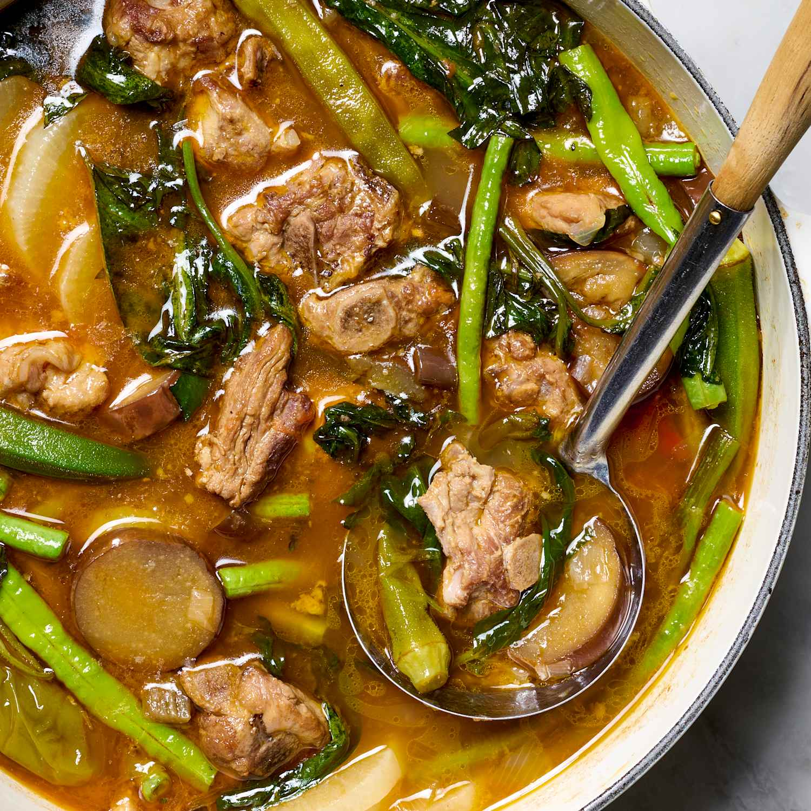

home
Pork Sinigang

What is Pork Sinigang?
Sinigang is a Filipino sour soup with pork belly, tamarind broth, and vegetables like daikon radish, eggplant, string beans, and kangkong.
The broth is sour from the tamarind and savory from the pork fat that comes out as the meat simmers. This Pork Sinigang is the most common
version of sinigang in Filipino homes. It is eaten with rice and a saucer of fish sauce with crushed siling labuyo on the side. This Pork
Sinigang recipe uses the traditional boiled method.
The pork version is what most Filipinos mean when they say sinigang without saying which kind. The chicken version is called sinampalukang
manok when made with young tamarind leaves. In 2021, TasteAtlas named sinigang the best vegetable soup in the world. It is also mentioned
adobo as a candidate for the unofficial national dish of the Philippines.
Ingredients
- 1/2 kg of pork belly or spare ribs cut into bite-sized cubes
- 1/4 kg of fresh green tamarind pods
- 1 medium onion quartered
- 2 medium tomatoes quartered
- 2 peeled and halved taro roots
- 1 medium daikon radish sliced into rounds
- 10 yardlong beans cut into short pieces
- 2 whole long green chili peppers
- 2 cups of water spinach leaves and stems
- 3 tablespoons of fish sauce
- 1 pinch of black pepper
How to Cook Pork Sinigang?
- Boil the pork: Place the pork cubes, onion, and tomatoes in a pot with 8 cups of water and bring to a boil.
- Skim the surface: Use a slotted spoon to skim off the grey foam (scum) that rises to the top to keep the broth clear.
- Simmer until tender: Cover the pot, lower the heat, and simmer for 30 to 45 minutes until the meat is fork-tender.
- Cook the taro: Stir in the gabi (taro) and cook for 10 minutes until it starts to soften.
- Sour the broth: Pour in your tamarind and fish sauce (patis), stirring well.
- Add the radish: in the radish (labanos) slices and cook for 3 minutes.
- Add the remaining vegetables: in the string beans, okra, and long green chili peppers, then cook for another 5 minutes.
- Steam the greens: off the heat entirely, stir in the kangkong leaves, and immediately cover the pot. Let the residual heat cook the greens for 3 to 5 minutes before serving.